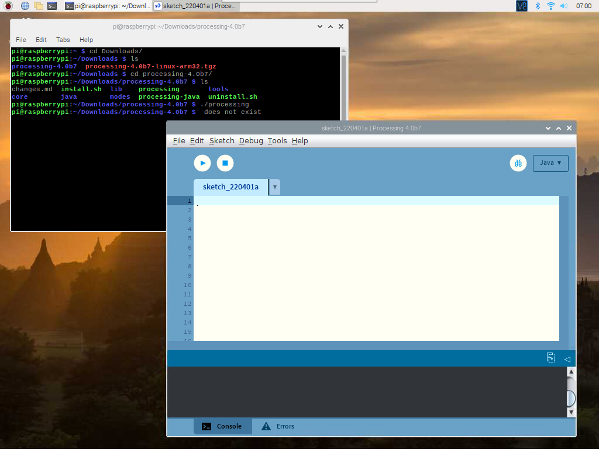

Nota
¡Hola! Bienvenido a la Comunidad de Entusiastas de SunFounder para Raspberry Pi, Arduino y ESP32 en Facebook. Sumérgete en el mundo de Raspberry Pi, Arduino y ESP32 junto a otros entusiastas.
¿Por qué unirse?
Soporte Experto: Resuelve problemas postventa y desafíos técnicos con la ayuda de nuestra comunidad y equipo.
Aprende y Comparte: Intercambia consejos y tutoriales para mejorar tus habilidades.
Avances Exclusivos: Accede anticipadamente a anuncios de nuevos productos y adelantos exclusivos.
Descuentos Especiales: Aprovecha descuentos exclusivos en nuestros productos más recientes.
Promociones Festivas y Sorteos: Participa en sorteos y promociones especiales.
üëâ ¬øListo para explorar y crear con nosotros? Haz clic en [Aqu√≠] y únete hoy mismo.
Juega con Processing
¿Qué es Processing?
Processing es un entorno de programación sencillo creado para facilitar el desarrollo de aplicaciones visuales, especialmente las enfocadas en animación y en brindar retroalimentación instantánea a los usuarios mediante la interacción. Los desarrolladores buscaban una forma de “bosquejar” ideas en código. A medida que sus capacidades se han expandido en la última década, Processing se ha utilizado no solo para crear bosquejos, sino también en trabajos de producción avanzados. Originalmente concebido como una extensión de Java orientada a artistas y diseñadores, Processing ha evolucionado hasta convertirse en una herramienta de diseño y prototipado utilizada en instalaciones a gran escala, gráficos en movimiento y visualización de datos complejos.
Processing está basado en Java, pero como los elementos de programación en Processing son bastante simples, puedes aprender a usarlo incluso si no conoces Java. Si estás familiarizado con Java, es recomendable dejar de lado por un momento la relación de Processing con Java hasta que te acostumbres a cómo funciona la API.
Este texto proviene del tutorial, Processing Overview.
Instalar Processing
Nota
Antes de que puedas utilizar Processing, debes acceder al escritorio de Raspberry Pi de forma remota (Acceso a Escritorio Remoto para Raspberry Pi) o conectar una pantalla a la Raspberry Pi.
Bienvenido a Processing! Primero visita https://processing.org/download y selecciona la versión Linux ARM32-bit.
Luego, descarga un archivo .tar.gz, común entre los usuarios de Linux. Descarga el archivo en tu directorio de inicio, luego abre una ventana de terminal y escribe:
tar xvfz processing-xxxx.tgz
(Reemplaza xxxx con el resto del nombre del archivo, que corresponde al número de versión). Esto creará una carpeta llamada processing-2.0 o algo similar. Luego, cambia a ese directorio:
cd processing-xxxx
y ejecútalo:
./processing
Con suerte, ahora podrás ver la ventana principal de Processing.
Instalar Hardware I/O
Para poder usar los GPIO de la Raspberry Pi, necesitas agregar manualmente una Hardware I/O library.
Haz clic en Sketch -> Import Library -> Add Library...

Encuentra Hardware I/O, selecciónalo y luego haz clic en Instalar. Una vez finalizado, aparecerá un icono de verificación.